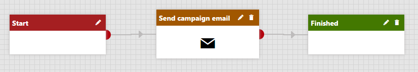

Working with the automation process designer
This chapter describes the process designer, a built-in tool that provides a visual representation of marketing automation processes. The designer allows you to define the steps that implement the functionality of automation processes.
Accessing the process designer
To open the process designer for an automation process:
Open the Marketing automation application.
Edit (
 ) the process that you want to design.
) the process that you want to design.Switch to the Steps tab.
The following image shows the appearance of the designer for an automation process consisting of the Start, Send campaign email and Finish steps. The steps are connected by transition lines. The direction of the arrows indicates which way the process moves forward.

Process with Start, Send newsletter issue and Finish steps
Tip
If your graph doesn't fit into the designer area, click an unoccupied area of the grid and drag to expose additional free space.
Prerequisite
Windows Communication Foundation must be configured for the advanced workflow designer to work.
Kentico EMS required
Features described on this page require the Kentico EMS license.
Standard steps
You can use the following types of basic steps to design automation processes:
|
Step |
Description |
|
Standard |
Basic approval step. Allows designated users or roles to decide whether the process continues to the next step. |
|
Condition |
Splits the process into two branches based on a condition. The process automatically transitions to the next step according to the result of the condition. |
|
Multi-choice |
Splits the process into any number of branches based on a set of conditions.
|
|
First win |
Splits the process into any number of paths based on a set of conditions. The process automatically continues through the branch whose condition is met first. |
|
User choice |
Splits the process into any number of branches. Designated users need to manually choose the next step for each contact in the process. |
|
Wait |
Halts the process for a specified amount of time before continuing to the next step. See: Adding wait steps |
|
Finished |
Represents the end of the process. |
Action steps
You can also embed actions into processes. When a contact reaches an action step in a process, the system automatically performs the given action.
|
Action step |
Description |
|
Change contact account |
Adds or removes the contact from an account. |
|
Change contact group |
Adds or removes the contacts from a contact group. |
|
Delete contact |
Deletes the contact currently going through the automation process. |
|
Import to Salesforce |
Replicates the contact into a lead in a target Salesforce organization. You need to have Salesforce replication set up for your websites to use this action. |
|
Log custom activity |
Logs a custom activity for the contact. |
|
Newsletter subscription |
Subscribes or unsubscribes the contact from a newsletter. |
|
Send transactional email |
Sends a transactional email (for example subscription confirmation) to any address. |
|
Send marketing email |
Sends a marketing email (i.e., newsletter or email campaign) to the contact. Note: When performing this action step, the process automatically adds the contact as a recipient. |
|
Set contact property |
Inserts a new value into one of the contact's properties (fields). Culture-dependent data used in the 'Property' value of this action need to be entered in the 'en-US' culture format. For example, the MDY format should be used for dates (12.21.1989). |
|
Set contact status |
Changes the contact's status. |
|
Start process |
Triggers a different marketing automation process for the contact. Based on the recurrence settings of the target process, this action can result in multiple unnecessary instances of the process running concurrently. |
Tip
If your developers create custom actions, you can add them through the designer as well.